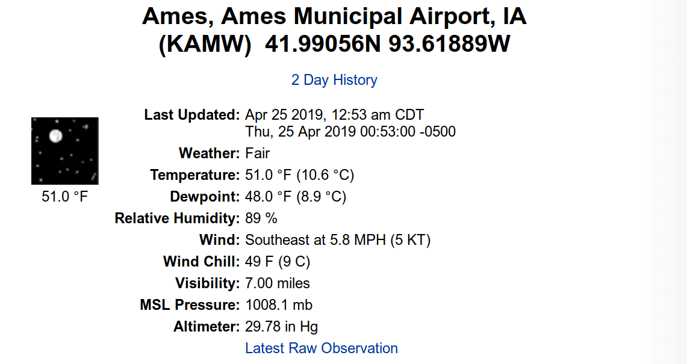

library(airportweather)
#> Loading required package: shinyIntroduction
The site https://w1.weather.gov/xml/current_obs/ provides access to observed current weather conditions for about 2,367 locations across 58 US States and Territories.

The ueser can click the XML link to acess current weather report of an airport location. From the browser, different kinds of weather associated data is shown.

- Weather
- Temperature
- Dewpoint
- Relative Humidity
- Wind
- Wind Chill
- Visibility
- MSL Pressure
Actully, the XML file contains more than 20 different types of weather data, as well as the location and time information of the observations. A link to “2 Day History” gives accesse of an HTML page contianing weather history data for past 72 hours.

Thanks to the well orgnized weather data from National Weather Service website, the user can easily explore both the spatial and temporal aspect of weather of selected locations. However, the XML and HTML format need to be converted to dataframes before analysis. The package airportweather is designed as a efficient tool to scrape, extract, integrate and visualize the weather data of airport locations. The advantage of the package is it scrapes real time data from web when calling functions of the package, so the most up-to-date data is analyzed.
package data preparation
The primer key of the weather data is 4 characer CODE of airport loacations. Scraping from the root page https://w1.weather.gov/xml/current_obs/ , we have collected all possibe airport code together with the name of location and the state/territory abbreviations correspond to the code. The data set all_code.rda contains 2,367 US airport codes.
data(package = "airportweather", "all_code")
pander::pandoc.table(head(all_code))| State | Code | Name |
|---|---|---|
| ak | PADK | Adak Island, Adak Airport |
| ak | PAUT | Akun Airport |
| ak | PAFM | Ambler, Ambler Airport |
| ak | PAKP | Anaktuvuk Pass, Anaktuvuk Pass Airport |
| ak | PAED | Anchorage, Elmendorf Air Force Base |
| ak | PALH | Anchorage, Lake Hood Seaplane Base |
Installation
devtools::install_github("floatgreen/weatherstar")Functions
obhistory()
Usually, the weather condition (Sunny, Fog, etc..) and air temperature( in degrees Fahrenheit) are two most important elements in weather data. As a tiny example, obhistory() is able to retirve a table containing time, weather and temperature.
KAMW_Table <- obhistory("KAMW")
pander::pandoc.table(head(KAMW_Table))| date | time | localtime | time_UTC | Weather |
|---|---|---|---|---|
| 23 | 23:53 | 2019-04-23 23:53:00 | 2019-04-23 18:53:00 | Fair |
| 24 | 00:53 | 2019-04-24 00:53:00 | 2019-04-23 19:53:00 | Fair |
| 24 | 01:53 | 2019-04-24 01:53:00 | 2019-04-23 20:53:00 | Fair |
| 24 | 02:53 | 2019-04-24 02:53:00 | 2019-04-23 21:53:00 | Fair |
| 24 | 03:53 | 2019-04-24 03:53:00 | 2019-04-23 22:53:00 | Fair |
| 24 | 04:53 | 2019-04-24 04:53:00 | 2019-04-23 23:53:00 | Fair |
| Temperature | hday |
|---|---|
| 47 | first24hours |
| 43 | first24hours |
| 41 | first24hours |
| 40 | first24hours |
| 40 | first24hours |
| 40 | first24hours |
This function extract tables from HTML and select air tempereture as the variable of interest.
The tabe contains 7 columns,
| Variable | Description | Type |
|---|---|---|
| day | correspond to the date, 1 as the earliest date | factor |
| date | the same as in the original html table | chr |
| time | the same as in the original html table | chr |
| fulltime | the full formated time | POSIXct |
| Weather | the Weather | Factor |
| Temperature | define the 1st, 2nd and 3rd 24 hours | Factor |
Note that the returned dataframe has various number of rows, as the observation frequency is not fixed at each airport site. For instance, KAMW, where the weather data collected every hour will return 72 rows, while KORD, where data collected every 20 minutes, will return 216 rows.
KORD_Table <- obhistory("KORD")
pander::pandoc.table(head(KORD_Table))| date | time | localtime | time_UTC | Weather |
|---|---|---|---|---|
| 23 | 23:51 | 2019-04-23 23:51:00 | 2019-04-23 18:51:00 | Mostly Cloudy |
| 24 | 00:51 | 2019-04-24 00:51:00 | 2019-04-23 19:51:00 | Partly Cloudy |
| 24 | 01:51 | 2019-04-24 01:51:00 | 2019-04-23 20:51:00 | Mostly Cloudy |
| 24 | 02:51 | 2019-04-24 02:51:00 | 2019-04-23 21:51:00 | Mostly Cloudy |
| 24 | 03:51 | 2019-04-24 03:51:00 | 2019-04-23 22:51:00 | Mostly Cloudy |
| 24 | 04:51 | 2019-04-24 04:51:00 | 2019-04-23 23:51:00 | Mostly Cloudy |
| Temperature | hday |
|---|---|
| 50 | first24hours |
| 49 | first24hours |
| 48 | first24hours |
| 47 | first24hours |
| 44 | first24hours |
| 43 | first24hours |
An unusual case is that when the user run functions exactly at the time of an observation time, then the html will have one data point less than the normal cases, so does the rerurned dataframe.